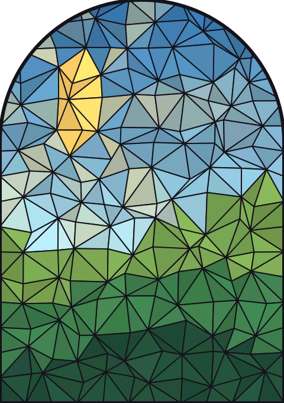

Songs for Hard Days · Psalm 23
Beside Still Waters
Rest is not a reward for finishing everything. In Psalm 23 the shepherd makes the sheep lie down, long before the valley has been crossed.
Rev. Hannah Okafor · November 1, 2026
Sermons
Listen on the drive, read the notes, or take the questions to your small group.

Songs for Hard Days · Psalm 23
Rest is not a reward for finishing everything. In Psalm 23 the shepherd makes the sheep lie down, long before the valley has been crossed.
Rev. Hannah Okafor · November 1, 2026
Songs for Hard Days · Psalm 13
The Bible gives us permission to complain to God. Psalm 13 moves from protest to trust in six short verses, and it does not hurry.
Ruth Adeyemi · October 25, 2026

Songs for Hard Days · Psalm 46
The most quoted line in Psalm 46 is spoken in the middle of war and falling mountains. Stillness here is not a quiet morning. It is courage.
Rev. Hannah Okafor · October 18, 2026
The Upside-Down Kingdom · Matthew 5:1–12
Jesus begins his best-known sermon by calling people blessed whom nobody else would. Grief, he says, is not a sign that God has left.
Rev. Hannah Okafor · September 27, 2026
The Upside-Down Kingdom · Matthew 5:9
Keeping the peace and making peace are different things. One avoids the hard conversation, and the other walks toward it.
Daniel Reyes · September 20, 2026
The Upside-Down Kingdom · Matthew 6:25–34
Jesus prescribes something surprising for anxiety: go outside and pay attention. Worry shrinks when we notice how much we are not holding up.
Ruth Adeyemi · September 13, 2026
Ordinary Faithful · Ruth 1
Ruth’s promise is often read at weddings, but she says it to her mother-in-law on a road out of famine and loss. Faithfulness begins in unglamorous places.
Rev. Hannah Okafor · August 23, 2026
Ordinary Faithful · Ruth 2
Boaz prays that God will shelter Ruth, then leaves extra grain in her path. Sometimes we are the answer to the prayers we pray.
Daniel Reyes · August 16, 2026
Nothing found.